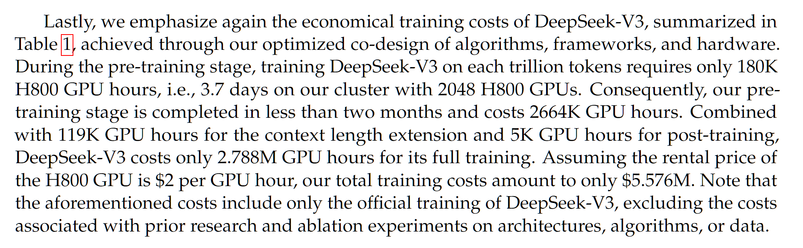

Debunking Deepseek Delusions
On January 20th, 2025, a Chinese AI company called DeepSeek open-sourced and released their reasoning model, R1. What’s different about this model vs. all the other open-source LLMs are a couple things: Performance is actually as good as OpenAI’s o1, which is a frontier model, marking the first time open-source has truly caught up to closed-source 1. This was done with a relatively low training budget compared to other frontier models 2. The easy-to-use UI, combined with a good UX with visible chain-of-thought in their website and app led to millions of new users
Given that DeepSeek is a Chinese company, the U.S. and its AGI companies have a variety of “national security concerns”. Rampant misinformation has been spreading about the model due to this. The goal of this blog post is to counteract many of the extremely bad AI-related takes about DeepSeek since its release and provide a balanced take as an AI researcher who works at the forefront of generative AI.
Let’s get started!
Myth 1: DeepSeek is a Chinese company that came out of nowhere, deeply suspicious!
Completely false, pretty much any generative AI researcher had already heard of DeepSeek by January 2025. DeepSeek even previewed R1 a couple months before its full release!
Anybody spreading this myth is likely someone who doesn’t work in AI and it is preposterous and extremely pretentious to assume that you know everything about what’s going on in a field if you are not actively a part of it.
DeepSeek’s first open-source models were released in November 2023, which were state-of-the-art coding LLMs (DeepSeek-Coder). As you can see in the below graph, DeepSeek continued shipping over the course of a year to reach R1:

So this isn’t some overnight success, and there’s nothing suspicious about their rate of progress. With everything moving so fast in AI and with the clearly cracked team they have, this much progress in a year seems quite reasonable to me.
If you are wondering what other companies are under the radar to the broader public but bullish in AI circles, I would look into Qwen (Alibaba), YI (01.AI), Mistral, Cohere, AI2. I will note that none of them have the consistent shipping of SOTA models like DeepSeek, but they all have the potential to release stellar models, as they have demonstrated in the past.
Myth 2: The model does not cost $6 million to make, the Chinese are lying about it
Okay this is an interesting one. The claim is that DeepSeek is lying about the true cost of model training in order to avoid admitting they had illegal under-the-table dealings to obtain compute they shouldn’t have access to (due to export controls).
First of all it’s worth understanding where this $6 million figure comes from. It’s mentioned in the DeepSeek-V3 paper that released a month before the DeepSeek-R1 paper:

DeepSeek-V3 is the base model of DeepSeek-R1, which means DeepSeek-R1 is DeepSeek-V3 with some additional reinforcement learning training. So in some sense the cost is already inaccurate simply because there’s an additional cost for the RL training that’s not accounted for. But that would likely only cost a few hundred thousand dollars.
Okay then, so is the $5.5 million claim of the DeepSeek-V3 paper incorrect? Numerous analyses based on GPU cost, dataset size, and model size achieve similar ballpark estimates. Note that while DeepSeek V3/R1 is a 671B parameter model, it is a mixture-of-experts model which means any function call/forward pass of the model only uses ~37B parameters and this is the value used in calculations for training cost.
However, note that DeepSeek is reporting an estimated cost based on current market prices for these GPUs. We don’t actually know how much their 2048 H800 GPU cluster (note: not H100s, a common misconception and confusion!) costs. Typically, contiguous GPU clusters cost less when bought together, so it may even be cheaper.
But here’s the thing, this is the cost for the final run. There are numerous experiments and ablations that are done at smaller scales to get to the final run which can cost a significant amount and this is not reported here.
On top of that, there are probably numerous other costs, like researcher salaries. SemiAnalysis reports that DeepSeek research salaries are rumored to be on the order of $1 million. This is comparable to the higher end of salaries at AGI frontier labs like OpenAI or Anthropic.
Typically when costs of training different models have been reported and compared, they have always focused on the final training run cost. But due to the poor discourse and misinformation spreading, people have been arguing that the additional costs discredit the cheap costs of DeepSeek and the efficient nature of their operation. This is wildly unfair. The additional costs both in terms of ablations/experiments and researcher salaries at other AGI frontier labs are quite significant but these are not typically mentioned in such discussions!
Myth 3: It’s so cheap, all the US AGI companies have been wasting their money, this is extremely bearish for NVIDIA
Okay I consider this to be another fairly dumb take. DeepSeek definitely was significantly more efficient in training compared to many other LLM. And yes, it’s very much possible many US frontier labs were being inefficient with their compute. However, that does not necessarily imply that having more compute is a bad thing.
Honestly, whenever I hear a take like this, it’s clear to me that they don’t understand scaling laws and they don’t understand the mindset of AGI company CEOs (and anyone who is treated as an expert in AI should understand such things). Let me dispense some alpha on this topic.
Scaling laws have demonstrated that as long as we continue to put more compute into the model, we get better and better performance. Of course, the exact axis this is done has changed: first it was with model size, then with dataset size, now with inference-time compute and synthetic data. Nevertheless, the overall trend of more compute=better performance seems to be holding since the original Transformer in 2017.
More efficient models means you can squeeze more performance for a given compute budget, but more compute will still be better. More efficient models means you can do more with less amount of compute, but you can do even more with more compute!
Now you may have your own opinions on scaling laws. You may think there is a plateau coming. You may argue past performance is not indicative of future results, as they say in finance. But that frankly doesn’t matter much if you want to understand the moves the largest AGI companies are making. All of the largest AGI companies are betting on scaling laws to hold long enough to reach AGI and ASI. This is their whole-hearted belief. And if they deeply believe this, then the only logical move is to obtain more compute.
(Personally, I am quite “scaling-pilled” but am open to evidence that suggests otherwise)
Now you may argue that NVIDIA GPUs are going to be obsolete soon, look at the performance of AMD, Cerebras, Graphcore, TPUs, Trainium, blah blah blah. There’s a million of these AI-specific hardware products that are all trying to compete with NVIDIA. And one of them might win in the future. In which case, maybe these AGI companies will switch to them. But this is completely orthogonal to DeepSeek’s success.
(Personally, I don’t see very strong evidence that other companies will topple NVIDIA’s domination of AI accelerator chips, given NVIDIA’s current market domination and continued level of innovation.)
So overall, I see no reason why DeepSeek means you should be bearish on NVIDIA. You may be bearish on NVIDIA for other reasons which may very well be justifiable and correct, but DeepSeek does not seem like the right justification to me.
Myth 4: DeepSeek didn’t make any meaningful innovations and are copying American companies
Wrong. There are numerous innovations in the design of the language model and how it was trained, some more significant than others. Here are a few (not a comprehensive list, read the DeepSeek-V3 and DeepSeek-R1 papers for more details): 1. Multi-latent attention - LLMs are usually Transformers which utilizes what is known as a multi-head attention (MHA) mechanism. The DeepSeek team developed a variant of the MHA mechanism that is both more memory-efficient and yields better performance. 2. GRPO with verifiable rewards - The AI community has been trying to replicate o1 since its release. Since OpenAI had been quite closed about how it works, the community had to explore a variety of different approaches for achieving o1-like results. There were various directions like Monte Carlo Tree Search (the approach used by Google DeepMind to win at Go) which turned out to be less promising than initially expected. On the other hand, DeepSeek demonstrated a very simple reinforcement learning (RL) pipeline can actually achieve o1-like results. On top of that, they developed their own variant of the common PPO RL algorithm called GRPO that is more efficient and better-performing. I think many in the AI community have been wondering, why didn’t we try this before already? 3. DualPipe - When training an AI model over many GPUs there’s a lot of efficiency aspects to consider. You need to figure out how the model and dataset is split across all the GPUs, how the data flows through the GPUs, etc. You need to reduce any transfer of data between GPUs too because it’s very slow, it’s better to process as much as you can on each individual GPU. Anyway there are many ways to set up this sort of multi-GPU training, and the DeepSeek team designed a new approach that is significantly more efficient and faster called DualPipe.
We are extremely lucky that DeepSeek has completely open-sourced and written in great detail these innovations, unlike American AGI companies. Now, everyone can benefit and improve their own training of AI models by utilizing these advances.
Myth 5: DeepSeek is “sucking knowledge” from ChatGPT
It has been claimed by David Sacks (AI and crypto czar for the US government) and OpenAI that DeepSeek is “sucking knowledge” from ChatGPT with a technique called distillation.
First of all, the term distillation is being used very weirdly here. Typically distillation refers to training on full probabilities (logits) of all the possible next words (tokens) but this info isn’t even exposed by ChatGPT.
But okay, let’s say we’re talking about training on text generated by ChatGPT, despite that not being the typical use of the term.
OpenAI and its employees are claiming that DeepSeek themselves generated text with ChatGPT and trained on it. They have provided no evidence for this but if this is true, then DeepSeek has clearly violated ChatGPT Terms of Service. I think the legal ramifications of this, especially for a Chinese firm, is unclear, but I don’t know much about that.
Note that this is only if DeepSeek themselves generated the data to train on. If DeepSeek used ChatGPT-generated data available from other sources (there are many public datasets at this point), my understanding is that this form of “distillation” or synthetic data training is not prohibited by the TOS.
That said, in my opinion this doesn’t take away from the achievements of DeepSeek. Rather than the efficiency side of DeepSeek, what was more impressive to me as a researcher was their replication of o1. And I highly doubt performing “distillation” of ChatGPT would help in any way, simply because the o1 CoT thinking process was never exposed publicly, so how would DeepSeek be able to learn it?
Additionally, many LLMs do perform training on ChatGPT (and other LLM) synthetic data, plus there’s naturally going to be AI text in any new Internet scrapes anyway.
Overall, the argument that DeepSeek’s model performs well because it simply distilled ChatGPT ignores the reality of their engineering, efficiency and architectural innovations, as detailed in DeepSeek’s technical report.
Should we be worried about China’s dominance in AI?
Maybe a little bit? Frankly, not much really changed in terms of the Chinese-US AI race between now and 2 months ago. Rather, the reaction from outsiders has been quite dramatic and this may indeed affect the overall AI landscape through changes in funding, regulation, etc.
The Chinese have always been competitive in the AI space, but DeepSeek makes them impossible to ignore now.
The typical argument regarding open-source has been that because China is behind we shouldn’t openly share our technology for them to catch up. But clearly China has already caught up, and they frankly did a while back, and they are actually leading on open-source, so it’s unclear if closing off our technology actually helps significantly.
Note that companies like OpenAI, Anthropic, and Google DeepMind definitely have models better than DeepSeek R1. For example, the benchmark results for OpenAI’s o3 model are quite impressive and they likely already have another subsequent model wrapping up development.
On top of that, with significant additional investment like Project Stargate and OpenAI’s upcoming funding round, OpenAI and other American frontier labs will have plenty of compute to be able to maintain their lead.
Of course, China will be pouring lots of additional capital into AI development. So overall, the competition is heating up! But I think the path continues to be quite promising for American AGI frontier labs to remain at the top.
Conclusion
On one hand, some AI folks, especially some at OpenAI, are trying to underhype DeepSeek. On the other hand, the reaction to DeepSeek from some pundits and self-proclaimed experts is exaggerated and even dangerous. No, it’s not over for OpenAI/Anthropic/Meta/Google/xAI/NVIDIA/etc. No, DeepSeek is (probably) not lying about what they did. That said, DeepSeek deserves the recognition and R1 is an impressive model.
Finally, I want to note that there is so much more nuance and details regarding what is discussed here. But I hope this article served as a useful jumping-off point for your own exploration of these topics. If other sources are sharing these falsehoods with no nuance, you can safely disregard them. But there are all kinds of more in-depth discussions from folks like Teortaxes, SemiAnalysis, etc., be sure to check them out!
Acknowledgements
Thanks to Paul Scotti for his feedback.